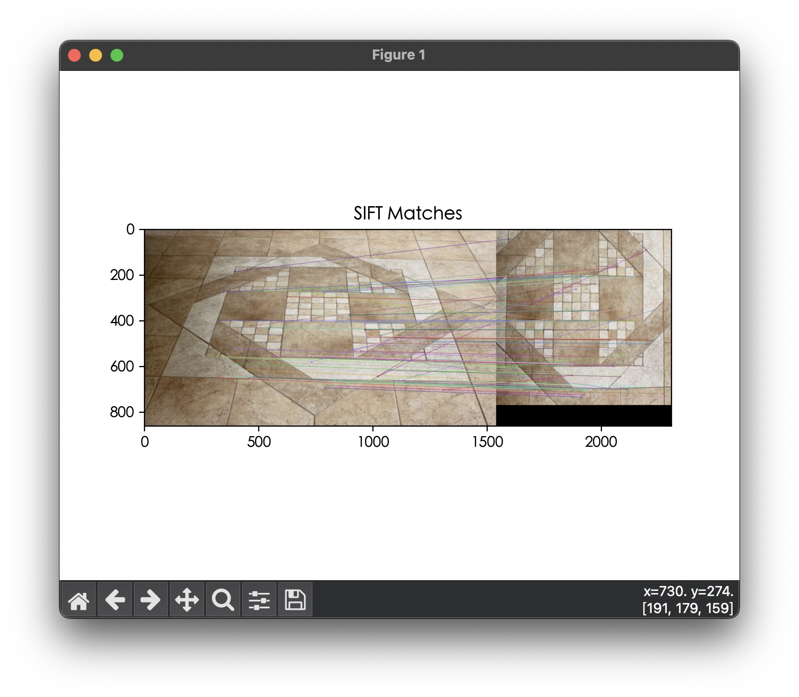
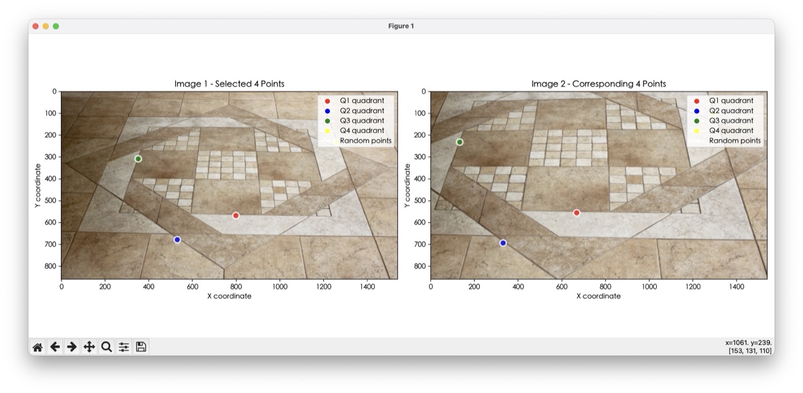
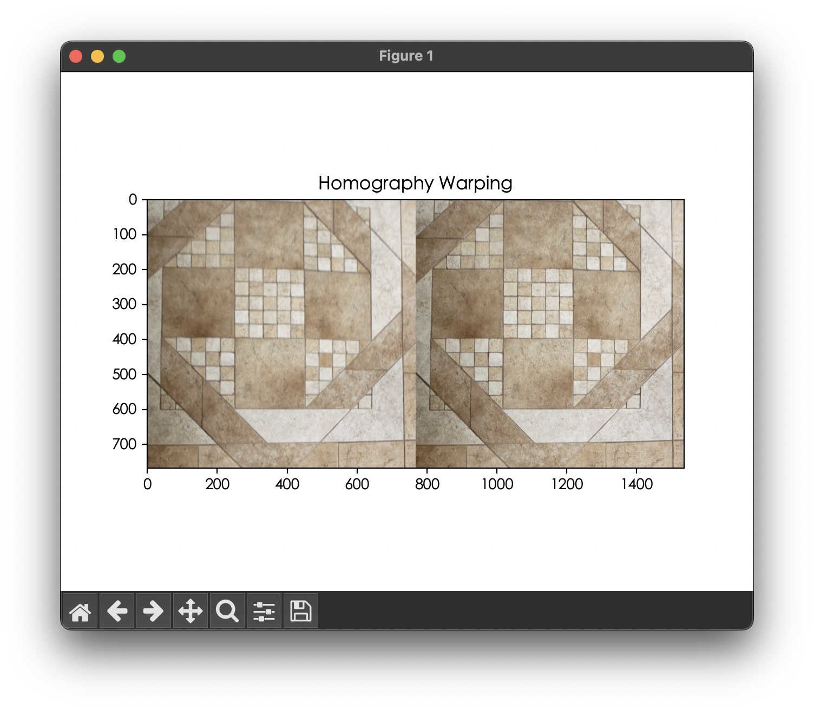

其他專案 · Selected Work · 2025
Homography Estimation
3D Computer Vision 課程作業：從兩張視角不同的照片中，用 SIFT 找特徵點配對， 挑出分布分散的優質點，透過 Normalized DLT + RANSAC 手刻算出 Homography 矩陣，再用雙線性插值把一張圖片 warp 成另一張圖片的視角。
要解決的問題
這是「3D Computer Vision」課程的作業：給定同一個平面（磁磚地板）在不同視角拍攝的兩張照片，
求出一個 3×3 Homography 矩陣 H，能把其中一張圖片的每個像素座標，
對應到另一張圖片中同一個平面點的座標。作業要求整條 pipeline 都要自己刻：
特徵點取樣策略、Normalized DLT、RANSAC、以及最後用 H 做 image warping，
不能直接呼叫 cv2.findHomography。
流程 Outline
- 取得待轉換圖片與兩張目標圖片，做 SIFT 特徵點配對
- 從配對結果中取優質的 k 個點做 Homography 估計（k ≥ 4）
- 把點歸一化（Normalize），統一資料尺度，避免特徵點座標大小不一影響數值穩定性
- 做 Normalized DLT，並用 RANSAC 迭代取誤差最小的解，算出 Homography 矩陣
- 計算 projection error 驗證結果
- Warping：把來源圖片透過 H 矩陣轉換成目標圖片視角
SIFT 特徵配對
SIFT（Scale-Invariant Feature Transform）在圖片中找出不會因縮放、旋轉、亮度變化而失效的穩定特徵點：
先用高斯金字塔與 DoG 在不同尺度找局部極值當候選關鍵點，過濾掉低對比度與邊緣上的不穩定點，
再依周圍梯度方向給每個點一個主方向，最後用 128 維梯度方向直方圖當描述子。
兩張圖片的描述子之間用 BFMatcher 做 k=2 的 knnMatch，
再用 Lowe's ratio test（次佳距離的 0.75 倍）篩掉容易錯配的模糊點。
def get_sift_correspondences(img1, img2):
sift = cv.SIFT_create()
kp1, des1 = sift.detectAndCompute(img1, None)
kp2, des2 = sift.detectAndCompute(img2, None)
matcher = cv.BFMatcher()
matches = matcher.knnMatch(des1, des2, k=2)
good_matches = []
for m, n in matches:
if m.distance < 0.75 * n.distance: # Lowe's ratio test
good_matches.append(m)
good_matches = sorted(good_matches, key=lambda x: x.distance)
points1 = np.array([kp1[m.queryIdx].pt for m in good_matches])
points2 = np.array([kp2[m.trainIdx].pt for m in good_matches])
return points1, points2
k_point_sample()：象限分散取樣
優質點不能只看配對距離，還要考慮空間分布：參考點越分散，算出來的 Homography 對整張圖片的還原效果越好。做法是先把圖片切成四個象限，每個象限依序取距離最小（最優質）的點， 直到湊滿 k 個；若某象限找不到剩餘的優質點，就用隨機點補齊，確保 k 個點不會全部擠在同一區域。
def k_point_sample(points1, points2, img1, k):
amount = 40
points1, points2 = points1[:amount], points2[:amount]
center_x, center_y = img1.shape[1] / 2, img1.shape[0] / 2
quadrant1 = (points1[:, 0] > center_x) & (points1[:, 1] > center_y)
quadrant2 = (points1[:, 0] < center_x) & (points1[:, 1] > center_y)
quadrant3 = (points1[:, 0] < center_x) & (points1[:, 1] < center_y)
quadrant4 = (points1[:, 0] > center_x) & (points1[:, 1] < center_y)
quadrants = [quadrant1, quadrant2, quadrant3, quadrant4]
selected_points1, selected_points2 = [], []
while len(selected_points1) < k:
for q in quadrants:
found = False
for i, flag in enumerate(q):
if flag:
selected_points1.append(points1[i])
selected_points2.append(points2[i])
q[i] = False
found = True
break
if not found: # 該象限沒有剩餘優質點，補隨機點
randint = np.random.randint(0, len(points1))
selected_points1.append(points1[randint])
selected_points2.append(points2[randint])
return np.array(selected_points1), np.array(selected_points2)
計算 Homography 矩陣
Homography 轉換的核心公式是 x' = Hx：
原始圖片的一個二維點 [x, y] 先轉成齊次座標 [x, y, 1]，乘上 3×3 的 H 矩陣後得到目標座標系中的位置。
當 k=4 時，四個點都是 SIFT 排序後最優質的點，不做 RANSAC 效果也不錯；但當 k 變大（例如 k=20）時，
取樣進來的點難免混入劣質配對，這時就必須用 RANSAC 隨機取樣、迭代找出誤差最小的 4 點組合，
再用這組 inliers 重新算一次最終的 H。
def homography_estimation(points1, points2):
threshold, max_iter = 3.0, 2000
n = points1.shape[0]
best_H, best_inliers, max_inliers = None, None, 0
for _ in range(max_iter):
if n < 4: continue
sample_indices = np.random.choice(n, 4, replace=False)
try:
H_candidate = compute_homography(points1[sample_indices], points2[sample_indices])
except:
continue
pts1_h = np.hstack([points1, np.ones((n, 1))])
projected = (H_candidate @ pts1_h.T).T
projected /= projected[:, 2:3] # 齊次座標歸一化
dists = np.linalg.norm(projected[:, :2] - points2, axis=1)
inliers = dists < threshold
if np.sum(inliers) > max_inliers:
max_inliers = np.sum(inliers)
best_H, best_inliers = H_candidate, inliers
if best_inliers is not None and np.sum(best_inliers) >= 4:
best_H = compute_homography(points1[best_inliers], points2[best_inliers]) # 用全部 inliers 重估
return best_H
底層的 compute_homography()
則是標準的 Normalized DLT：先各自把兩組點平移縮放到「平均中心在原點、平均距離 √2」，
用歸一化後的座標組出線性方程組 A，SVD 分解取最小奇異值對應的向量重塑成 3×3 矩陣，
最後再用歸一化矩陣的反矩陣把 H 反歸一化（denormalize）回原始座標系。
歸一化這一步很關鍵——像素座標數值範圍可能到幾千，直接做 DLT 容易讓 SVD 數值不穩定。
def normalize_points(points):
"""平移縮放到：平均中心在 (0,0)，平均距離 = sqrt(2)"""
n = points.shape[0]
mean = np.mean(points, axis=0)
dist = np.sqrt(np.sum((points - mean) ** 2, axis=1))
scale = np.sqrt(2) / np.mean(dist)
T = np.array([[scale, 0, -scale * mean[0]],
[0, scale, -scale * mean[1]],
[0, 0, 1]])
pts_h = np.hstack([points, np.ones((n, 1))])
return (T @ pts_h.T).T[:, :2], T
def compute_homography(points1, points2):
"""Normalize -> DLT -> Denormalize"""
pts1_norm, T1 = normalize_points(points1)
pts2_norm, T2 = normalize_points(points2)
A = []
for (x1, y1), (x2, y2) in zip(pts1_norm, pts2_norm):
A.append([-x1, -y1, -1, 0, 0, 0, x1*x2, y1*x2, x2])
A.append([0, 0, 0, -x1, -y1, -1, x1*y2, y1*y2, y2])
A = np.array(A)
_, _, Vt = np.linalg.svd(A)
Hn = Vt[-1].reshape(3, 3)
H = np.linalg.inv(T2) @ Hn @ T1 # denormalize
return H / H[2, 2]Homography Warping
目標是把來源圖片變成目標圖片的視角：先建一張跟目標圖片一樣大的空白畫布， 反向掃描——對目標畫布上的每個座標點，用 H 的反矩陣 算回它在來源圖片上對應的位置，再用雙線性插值取出該位置附近四個像素的加權平均當作最終顏色。 用反向映射（而不是正向把來源每個像素往前推）可以避免目標圖片上出現沒有被填到值的空洞。
def homography_warping(img1, img2, H):
h, w = img2.shape[0], img2.shape[1]
img1_wrap = np.zeros_like(img2)
H_inv = np.linalg.inv(H) # 目標 → 來源 的反向映射
for y in range(h):
for x in range(w):
src_pt = H_inv @ np.array([x, y, 1])
src_pt /= src_pt[2]
src_x, src_y = src_pt[0], src_pt[1]
if 0 <= src_x < img1.shape[1]-1 and 0 <= src_y < img1.shape[0]-1:
x0, y0 = int(np.floor(src_x)), int(np.floor(src_y))
x1, y1 = x0 + 1, y0 + 1
dx, dy = src_x - x0, src_y - y0
val = (img1[y0, x0] * (1-dx) * (1-dy) +
img1[y0, x1] * dx * (1-dy) +
img1[y1, x0] * (1-dx) * dy +
img1[y1, x1] * dx * dy) # 雙線性插值
img1_wrap[y, x] = val
return img1_wrap
學到的事：Homography 估計的精準度，其實不是靠更複雜的演算法，而是靠三個基本功打好： 特徵點要分散（象限取樣）、數值計算要正規化（Normalized DLT）， 以及配對難免有雜訊就要用 RANSAC 篩選——三者缺一，warping 結果都會明顯跑位或扭曲。